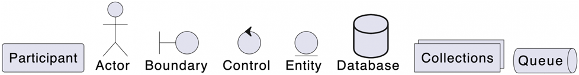
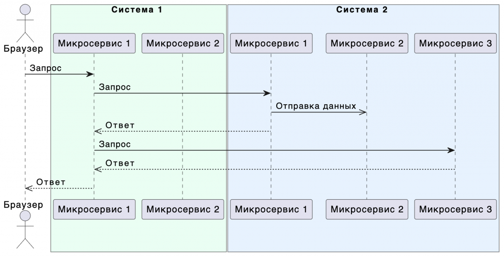
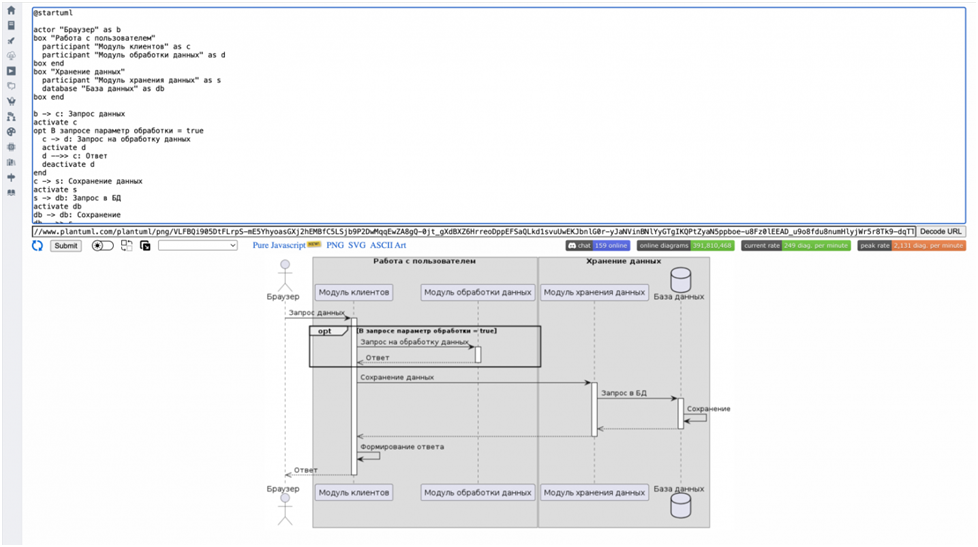

Нотация UML (SD)
UML (Unified Modeling Language) – унифицированный язык моделирования системных и бизнес-процессов.
SD (Sequence Diagram) – диаграмма последовательностей. Визуализирует взаимодействие между объектами в системе, показывает порядок сообщений, которыми объекты обмениваются во времени, и их жизненный цикл.
Диаграмма последовательностей состоит из следующих элементов:
- объекты (зеленое);
- линии жизни (красное);
- сообщения (синее).
Объекты
Сущности, которые взаимодействуют друг с другом. Основные типы объектов: - actor – пользователь или «клиент»; - participant – сервер, компонент системы; - database – база данных; - queue – топик или очередь.

Линии жизни
Отображают течение времени, а также активность или исполнение определенных функций объекта. Представляют из себя вертикальную линию с блоком активности.
Сообщения
Показывают обмен информацией между объектами. Например, клик пользователя по кнопке, но чаще это запрос или ответ, вызов хранимой процедуры или отправка сообщения. Сообщения отображаются в виде стрелок. Вид стрелки определяет тип сообщения:
Инструменты для работы с UML SD
- графический редактор draw.io;
- песочница PlantUML;
- плагины в инструментах JetBrains или VSCode.
Синтаксис PlantUNL
Определяем объекты
Описываем сообщения
Основные типы стрелок:
a ->> b: Асинхронный вызов
a -> b: Синхронный вызов
a -->> b: Ответ
a -x b: Запрос, который будет удален
Группируем сообщения
Группировка Alt используется с оператором else для того, чтобы показать альтернативные кейсы взаимодействия. Например, объект отправляет запрос, а второй объект, в зависимости от полученных данных, выполняет разные действия.
Визуализация:Группировка Opt используется для того, чтобы выделить сообщение в опциональный кейс. Например, объект отправляет запрос, а второй объект, в зависимости от полученных данных, может выполнить дополнительное действие.
Визуализация:Группировка Par используется с оператором else для того, чтобы выделить сообщения, которые выполняются параллельно. Например, объект отправляет запрос, а второй объект параллельно выполнит внутренние вычисления и вернёт ответ первому объекту.
Визуализация:Группировка Loop используется для того, чтобы выделить сообщения, которые выполняются несколько раз. Например, объект отправляет запрос, а второй объект выполнит внутренние действия несколько раз в зависимости от отправленных данных.
Визуализация:Группировка Group используется для того, чтобы скомпоновать сообщения по смыслу. Например, на диаграмме может быть много взаимодействий и для того, чтобы было меньше путаницы можно подписать группы сообщений.
Визуализация:Можно группировать сами объекты. Часто используется для описания взаимодействия нескольких систем с микросервисами.
Визуализация:
Полезные возможности PlantUML
Изменить цвет стрелок
Визуализация:Изменить цвет текста
Визуализация:Добавить подсказку
Визуализация:Поставить разделительную черту
Визуализация:Пример разработки SD в PlantUML
